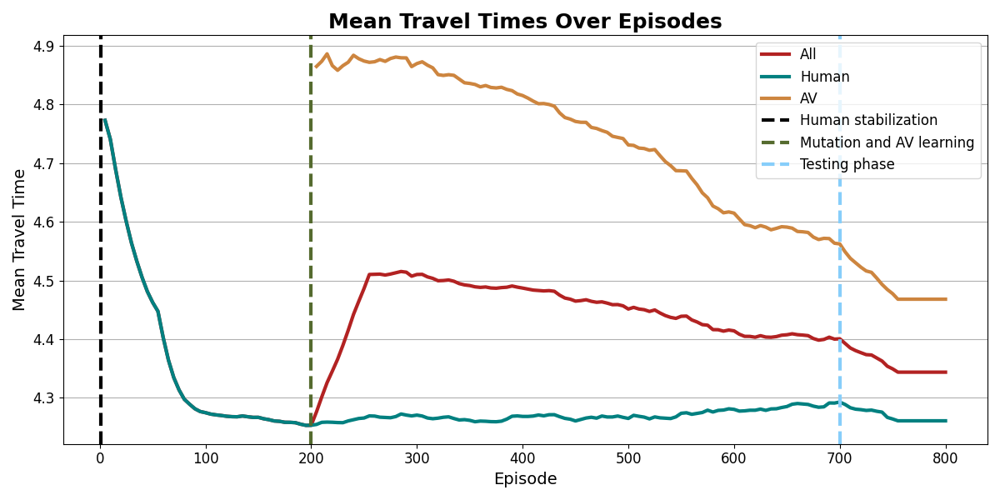
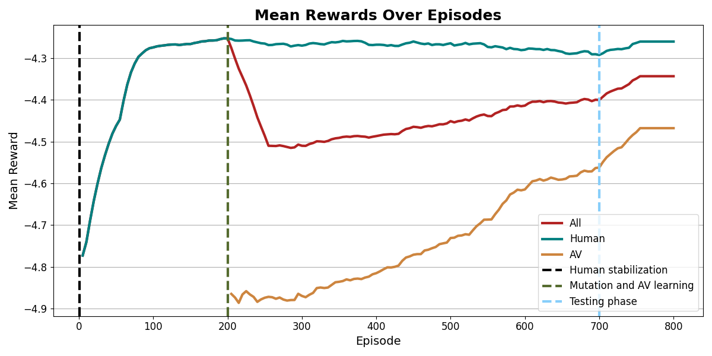

Experiment ID: sweep_bandit/lr_3e-4_ent_0.01_temp_0.5_seed_42
The core algorithm is an independent Bandit REINFORCE policy gradient model utilizing a PyTorch Multi-Layer Perceptron (MLP) architecture. It was developed directly in this repository (scripts/bandit_reinforce.py) to replace the legacy UCB algorithm with a differentiable deep learning approach.
Unlike UCB which uses deterministic bounds, Bandit REINFORCE maintains a stochastic policy (a probability distribution) over all possible routes. It operates as follows:
previous_agents_plus_start_time) is fed directly into a multi-layer Neural Network without arbitrary discretization.Reward - Baseline). The network weights are updated using gradient ascent (the REINFORCE theorem) scaled by the Learning Rate.-travel_time), encouraging the network to strictly increase the probability of choosing faster routes.Extracted from exp_config.json:
| Parameter | Value |
|---|---|
| Learning Rate (LR) | 0.0003 (3e-4) |
| Entropy Coefficient | 0.01 |
| Temperature | 0.5 |
| Baseline Alpha | 0.05 |
| Total Agents | 1035 (Human: 621, CAV: 414) |
| Training Episodes | 500 |
| Testing Episodes | 100 |
| Environment Seed | 42 |
Extracted from metrics/BenchmarkMetrics.csv:
| Metric | Value (seconds) | Description |
|---|---|---|
t_pre | 4.196 | Baseline human traffic travel time before AV intervention. |
t_test | 4.288 | Overall average fleet travel time during the testing phase. |
t_train | 4.401 | Overall average fleet travel time during the training phase. |
t_CAV | 4.412 | Average travel time of specifically the Autonomous Vehicles (CAVs) in the testing phase. |
t_HDV_test | 4.205 | Average travel time of the remaining Human-Driven Vehicles (HDVs) in the testing phase. |

